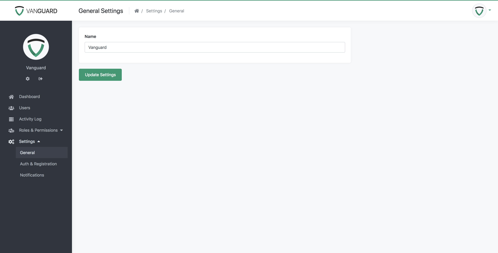
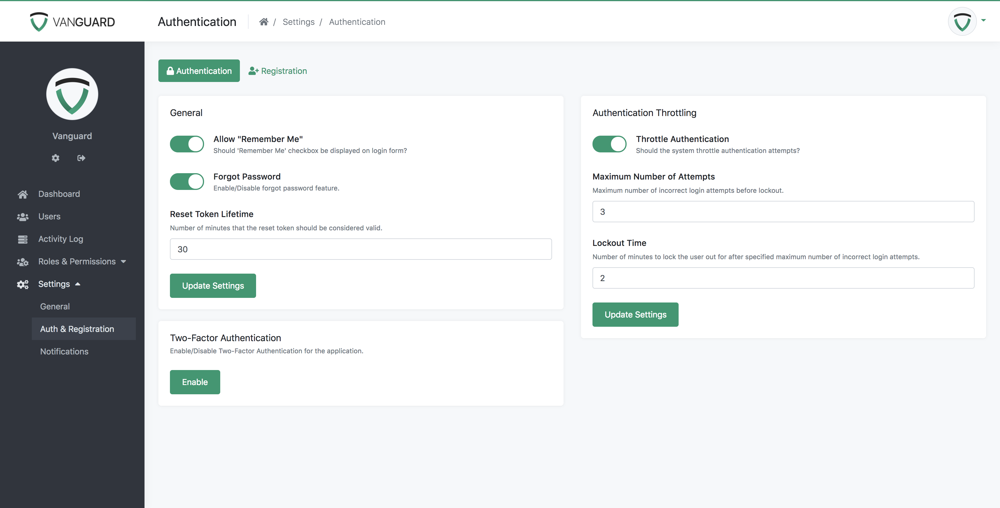
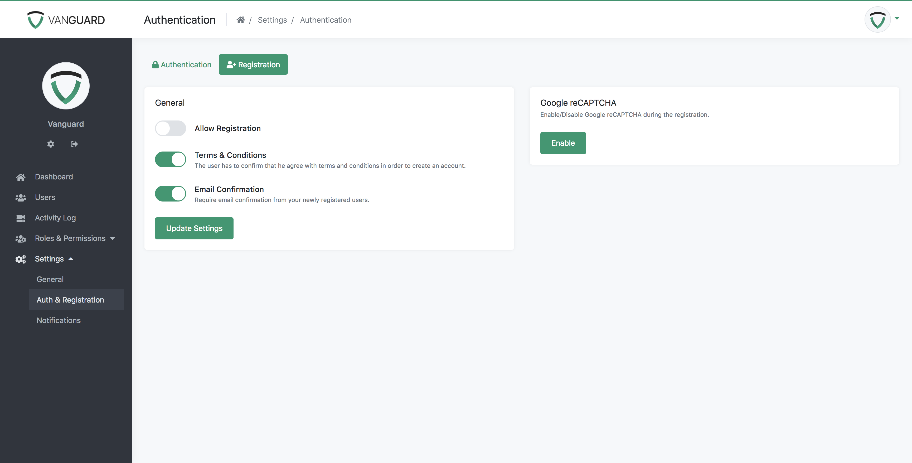
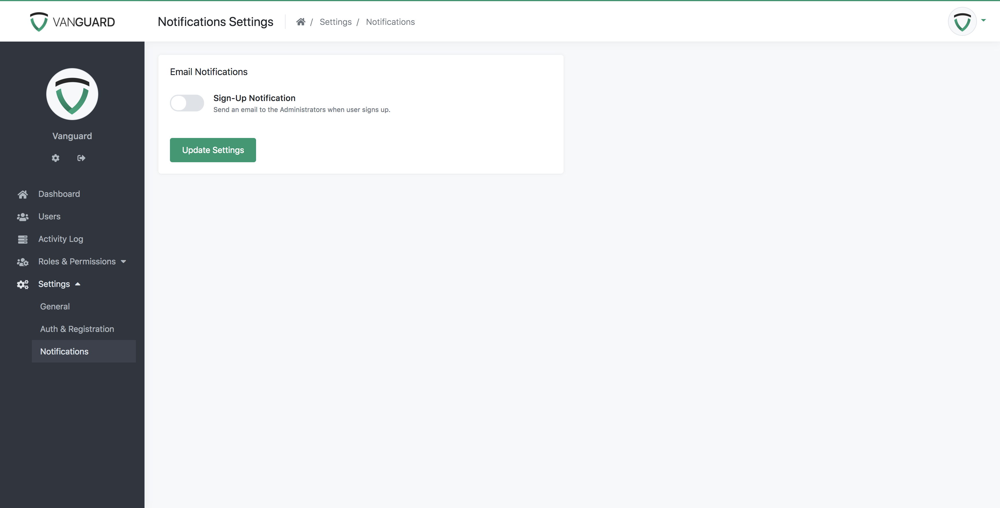

Settings
Settings
Vanguard provides simple but powerful interface for managing global application settings. It allows administrators (or any other users with appropriate permission) to easily enable/disable registration, Two-Factor Authentication, Authentication Throttling and more.
General Settings
General settings section is used for updating the application name. Once application name has been updated, it will change inside entire system, so you don't have to edit any code at all.

Authentication Settings
Authentication settings section contains everything that will allow easy authentication configuration.

General Auth Settings
-
Allow "Remember Me"? - used to enable/disable the checkbox for remembering the user, that is available on login page. If this option is set to OFF, users will be automatically logged out once their session expire.
-
Forgot Password - used for enabling/disabling reset password feature. If it is set to OFF, users won't be able to reset their password if they forget it.
- Reset Token Lifetime - integer variable that represent lifetime of password reset token (in minutes).
Authentication Throttling
Authentication Throttling is security feature that will prevent brute force attacks. If it is enabled and user enter wrong password for specific number of times (check "Maximum Number of Attempts" option below), his account will be locked for predefined period of time.
Available options are:
-
Throttle Authentication - used to enable/disable authentication throttling
-
Maximum Number of Attempts - maximum number of times that user can enter wrong credentials before his account is locked for some period of time
- Lockout Time - number of minutes that represent for how long user account will be locked. For example, if this parameter is set to 2 and Maximum Number of Attempts parameter from above is set to 5, this means that after some user enter wrong credentials for 5 times, his account will be locked down for 2 minutes.
Two-Factor Authentication (2FA)
If this option is enabled, users will be able to enable/disable 2FA using Authy secure service if they want to from their Profile page. In order to enable 2FA, check configuration section to see how to get required API key.
Registration Settings
Registration settings is used to quickly configure registration process, or to disable it completely. Page with self-explanatory options is provided below.

Notifications Settings
Notifications settings contains option for enabling or disabling email notifications when new user signs up. If it is set to YES, all users with Amin role will receive an notification when new user signs up.
